14. Extrusión de croquis anidados¶
En esta práctica vamos a crear croquis para extrudirlos, colocando unos croquis sobre otros y así formar figuras más complejas.
Abrimos la aplicación FreeCAD y hacemos clic en el icono para crear un nuevo documento .
Seleccionamos el banco de trabajo Part Design
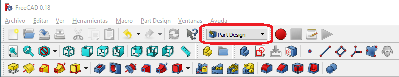A continuación seleccionamos crear un nuevo croquis.
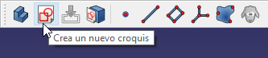Y elegimos el plano XY como plano base para situar el nuevo croquis.
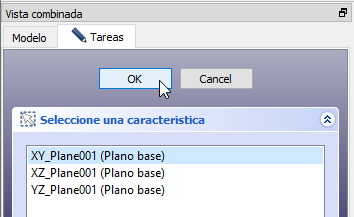En la pantalla aparecerá una rejilla donde poder dibujar en dos dimensiones.
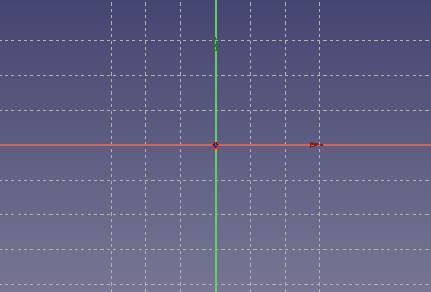A continuación vamos a dibujar un objeto sencillo, un octógono.
Primero ajustamos los controles de edición en la pestaña de Tareas, para que el dibujo se ajuste a la cuadrícula.

Ahora crearemos un octógono con el icono polilínea 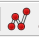.

Si nos equivocamos al colocar los puntos, una vez terminado el dibujo podemos clicar sobre los puntos y arrastrarlos con el ratón hasta su posición correcta.
Una vez que hayamos terminado, clicamos en la pestaña de Tareas y presionamos en el botón
Close. Nuestro dibujo se verá en vista en planta como en la siguiente figura.
Si no puedes ver el dibujo, Clica en el icono de 'Ajustar contenido completo a la pantalla' .
Para conseguir una pieza en tres dimensiones vamos a extrudir nuestro croquis seleccionando el icono correspondiente.
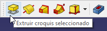O bien seleccionando en el Menú
Part Design... ExtruirEn los parámetros de extrusión elegimos la cota o altura que deseamos para la pieza, en este caso 50 milímetros.
Si cambiamos a vista en perspectiva, podremos ver nuestro octógono en tres dimensiones.
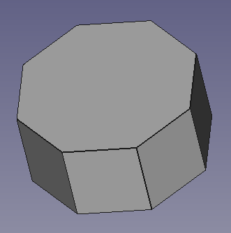Ahora vamos a seleccionar el área superior del octógono clicando sobre ella. El área cambiará a color verde.
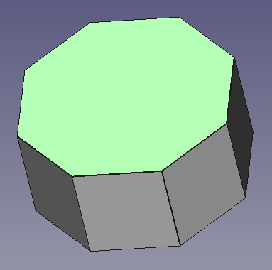Una vez seleccionada la cara superior, volvemos a clicar sobre el icono de crear croquis.
Esta vez, el croquis se dibujará sobre la cara seleccionada, no sobre el suelo.
Volvemos a ajustar los controles de edición para que se ajusten a la cuadrícula.
Y dibujamos otro octógono más pequeño sobre el primer octógono.
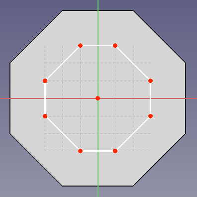Una vez que hayamos terminado, clicamos en la pestaña de Tareas y presionamos en el botón
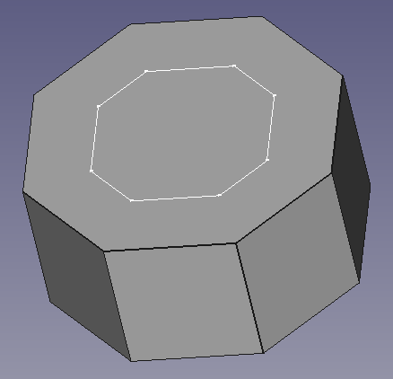Close. Nuestro dibujo se verá como en la siguiente figura.A continuación extrudimos el nuevo croquis para formar una nueva figura sobre la primera. Pulsamos el icono correspondiente.
O bien seleccionamos en el Menú
Part Design... ExtruirEn los parámetros de extrusión elegimos la cota o altura que deseamos para la pieza, en este caso 50 milímetros.
La pieza se verá como en la siguiente imagen.

Ahora vamos a generar un vaciado en la pieza creada. Comenzamos seleccionando la cara superior de nuestro objeto en tres dimensiones.
Una vez seleccionada la cara superior, creamos un nuevo croquis.
Volvemos a ajustar los controles de edición para que se ajusten a la cuadrícula.
Y dibujamos un cuadrado en el centro de la pieza.
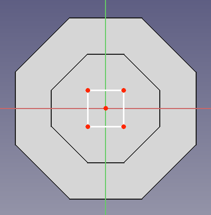Una vez que hayamos terminado, clicamos en la pestaña de Tareas y presionamos en el botón
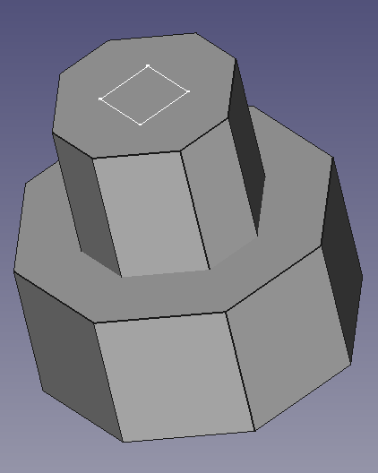Close. Nuestro dibujo se verá como en la siguiente figura.A continuación generamos un agujero a partir del croquis dibujado clicando en el icono de vaciado.
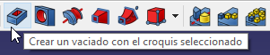O seleccionando en el Menú
Part Design... VaciadoUna vez pulsado, cambiamos los parámetros de vaciado para que el agujero atraviese a todos los objetos.
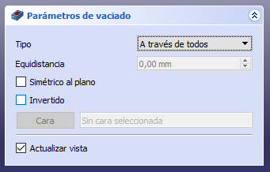Clicando el botón de
OKla pieza quedará agujereada como se puede ver en la siguiente figura.
Hasta ahora hemos creado croquis siempre en vertical, de abajo hacia arriba, pero los croquis se pueden colocar en cualquier superficie como puede verse en la siguiente figura.

Ejercicios¶
Crear una máscara en 3 dimensiones como la de la figura.
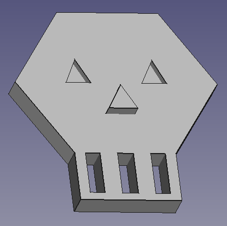Crear una casa como la de la figura.
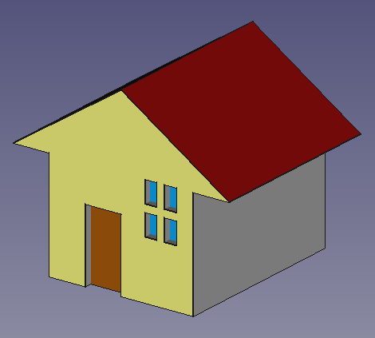El primer croquis con el cuerpo de la casa se colocará en el Plano XZ y se extrude en el plano Y.
Los siguientes croquis servirán para hacer agujeros en el cuerpo principal.
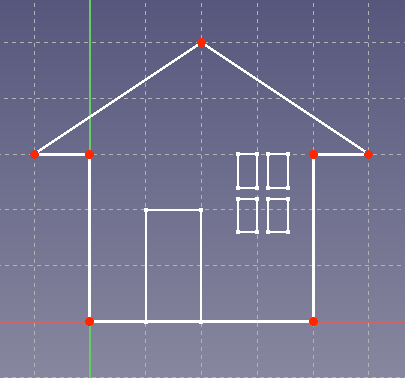Para dar colores a la casa seguiremos este procedimiento.
- Seleccionamos la casa completa en la pestaña de Modelo.
- Con el botón derecho del ratón sobre el modelo, seleccionamos ajustar colores.
- Seleccionamos con el ratón la cara del objeto que queremos cambiar de color.
- Seleccionamos el color en el cuadro de diálogo de Tareas.
- Clicamos en
OK.
Crear un juego de laberinto con bola como el de la figura.

A partir de los siguientes croquis.

Añade una esfera con el banco de trabajo Part y traslada la esfera como se puede ver en la primera figura.
Por último cambia el color de las caras del objeto y de la esfera.